P2 cosmetics
Collaborazione tanto attesa e enormemente soddisfatta. .
Inizio questa recenzione con codeste parole, ebbene sì, mi ha fatto un immenso piacere che l'azienda P2 cosmetics mi desse fiducia nel testare i propri prodotti. .
Parto subito col parlarvi di tale brand. .
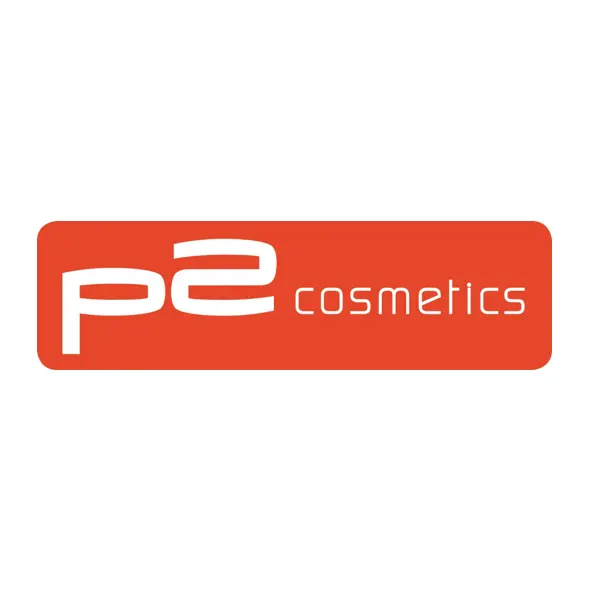
P2 cosmetics, nuovo brand austriaco di nail e makeup low coast già molto conosciuto in nord Europa e finalmente approda anche in Italia. Tanto apprezzato per il suo stile fashion e frizzante con un ottimo rapporto qualità - prezzo.
In Germania e in Austria tale brand è già molto stimato per la sua attenzione per la cura e la salute delle unghie . . ci sono nella sua vasta gamma infatti balsami, olii particolari, top coat e basi per varie tipologie di unghie e di nail art, non tralasciando una molteplice variazione di smalti di tantissimi colori e finish e infine troviamo anche una grande..
Il pacchetto che l'azienda mi ha omaggiato è questo:
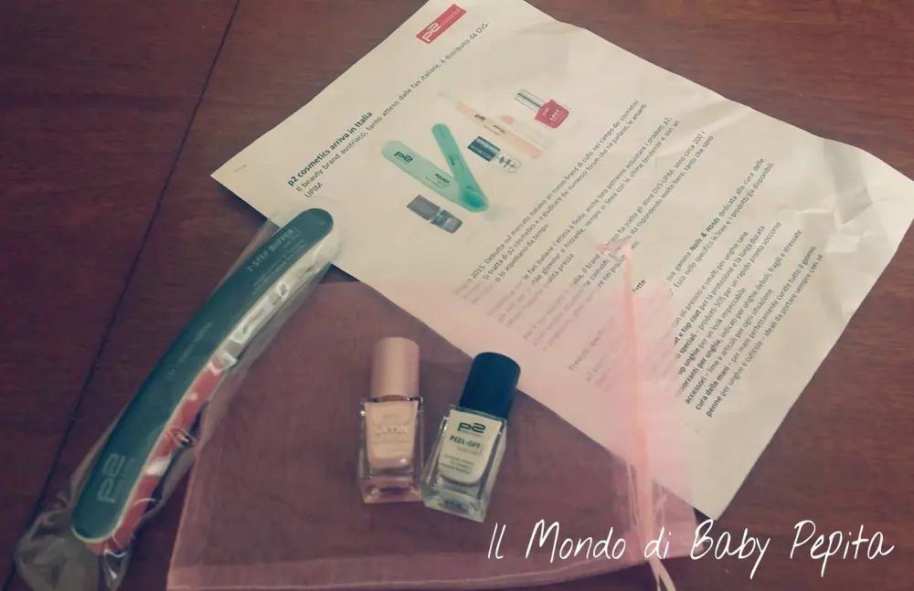
Al suo interno conteneva, come potete vedere, un sacchettino rosa con:
Peel off - base coat
smalto - satin suprem polish
colore: 060 queenly rose
Lima 7 step buffer nail file
inizio a parlarvi della lima:
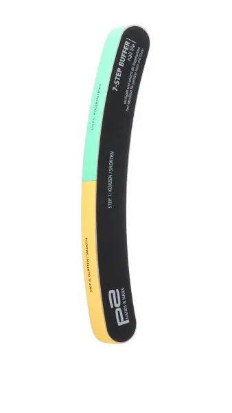
E' una lima particolare, appunto fatta da ben 7 lati, ogni lato serve a una funzione per le unghie.
Vi spiego ogni lato per sommi capi:
Leprime fasi 1, 2 e 3 si utilizzano per limare le lunghezze dell'unghia naturale;
La fase 4 per livellare e pareggiare la superficie;
La fase 5 per lisciare
e la 6 e la 7 per poter lucidare la superficie ungueale.
Per un risultato finale che vi risulterà l'unghia liscia
e pronta per stendere lo smalto.

Lima utile e molto comoda anche da portare con sè a lavoro, in viaggio o in qualunque altro posto per tenere sempre le proprie unghie in perfetta forma.
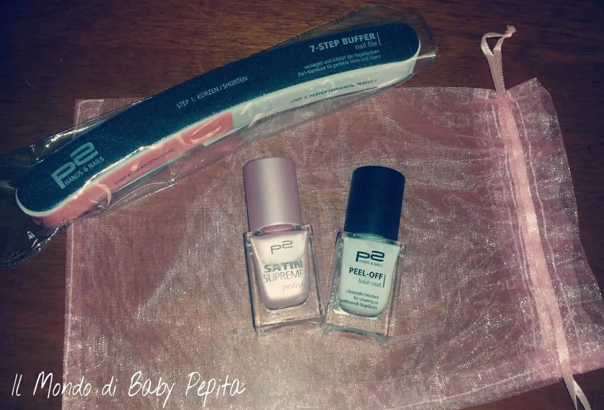
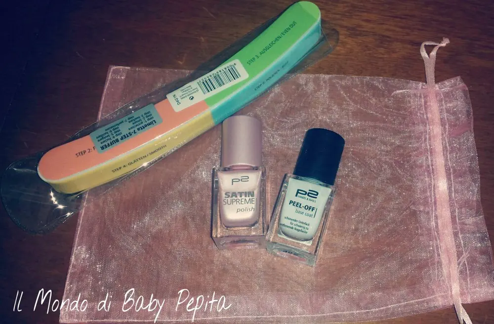
Parliamo ora del PEEL OFF - TOP COAT
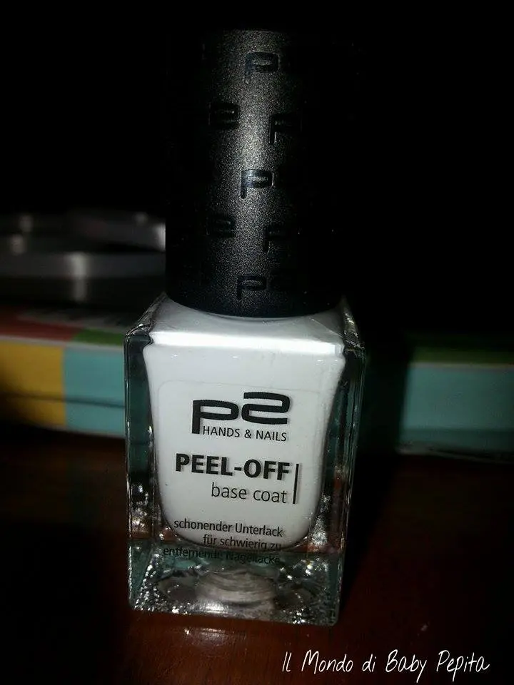
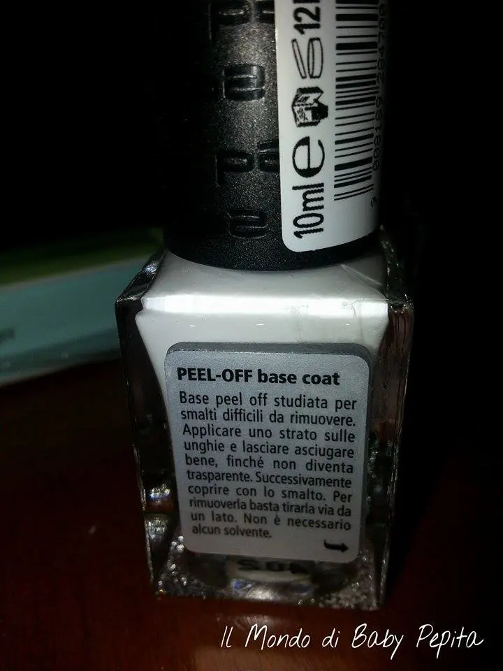
La confezione dice: Base peel pff studiata per smalti difficili da rimuovere.Applicare uno strato sulle unghie e lasciare asciugare bene, finchè non diventa trasparente. Successivamente coprire con lo smalto. Per rimuoverla basta tirarla via da un lato. Non è necessario nessun solvente.
Ed è effettivamente così, ho provato a fare la prova
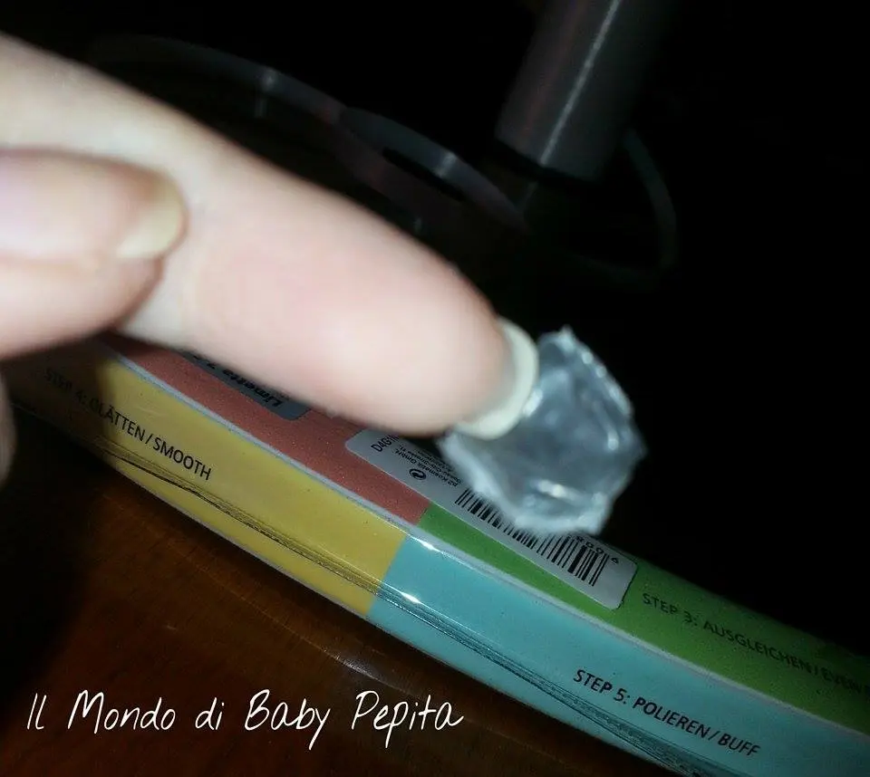
viene via come una pellicola, geniale a mio avviso.
 Un prodotto credo molto utile sia per smalti che sono difficili da togliere ma credo anche molto utile per quei smalti che tendono a tingere l'unghia e le rendono scure e poco curate. .Una vera genialata direi, comodo anche quando si è in viaggio e non si ha un solvente. Tirando da un lato viene via tutto lo smalto senza nessuna fatica e senza residui sull'unghia.
Un prodotto credo molto utile sia per smalti che sono difficili da togliere ma credo anche molto utile per quei smalti che tendono a tingere l'unghia e le rendono scure e poco curate. .Una vera genialata direi, comodo anche quando si è in viaggio e non si ha un solvente. Tirando da un lato viene via tutto lo smalto senza nessuna fatica e senza residui sull'unghia. Passiamo ora a uno smalto per me bellissimo..
Il SATIN SUPREME polish 060 queenly rose
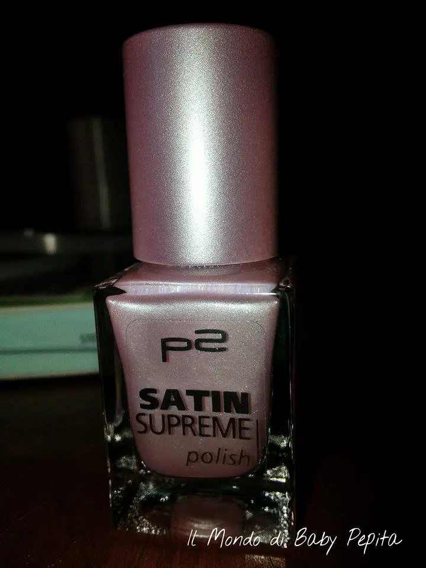
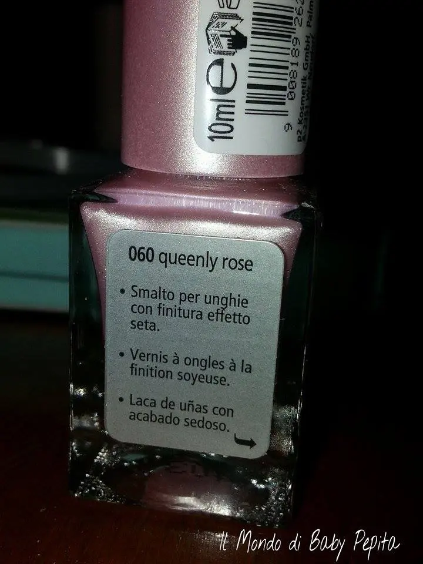
La confezione dice:Smalto per unghie con finitura effetto seta.
Colore bellissimo, un rosa delicato e setoso. .
Promosso a pieni voti. .
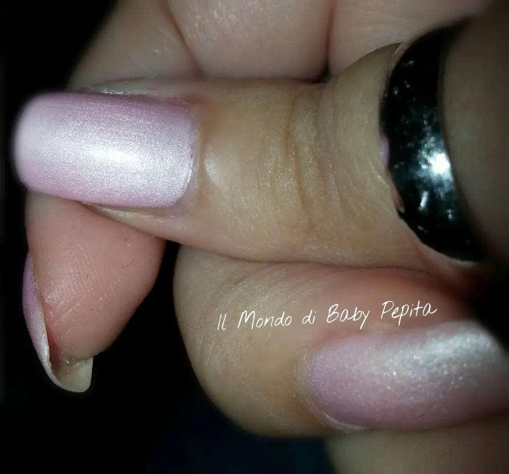
A me ha colpito soprattutto per il fatto di essere satinato. .e non ruvido, graffiato, granuloso e opaco ma satinato. .è ben differente. .Volutamente non ho voluto passare il lucido sopra perchè mi piace l'effetto al tatto. .ogni tanto vado a passare il dito ihihih
Un colore e una texutura particolare e signorile. .
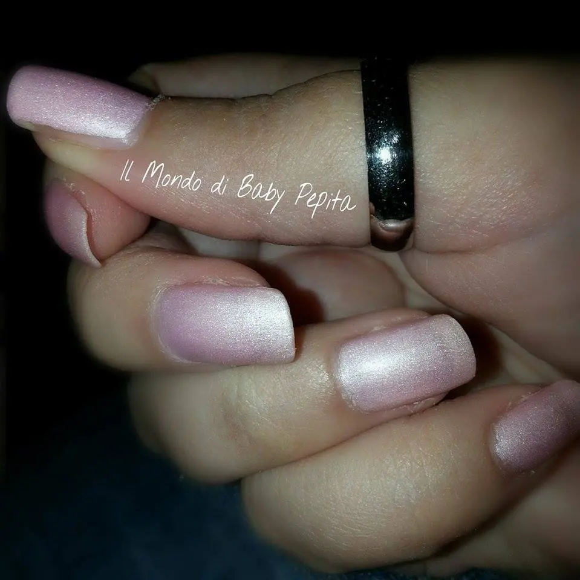

Vi lascio il link del sito di questo brnad, ne vale la pena andare a dare un'occhiata. http://p2cosmetics.com/
facebook itlaiano: https://www.facebook.com/P2-Cosmetics-Italia-376092779231841/timeline/